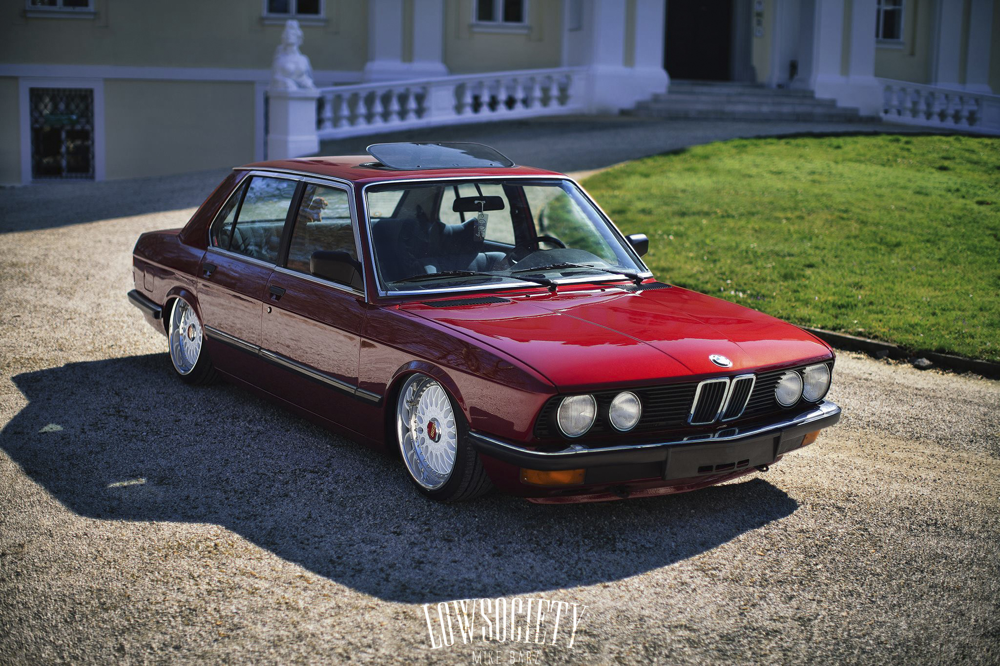

|

|
BMW offered all their engines for the E28. These were the petrol engines M10, M20, M30 as well as their sport versions and the diesel engine M21. The M20, M21 and M30 are all fuel-injected straight-six engines. The M20 and M30 petrol engines have a multipoint fuel injection system, while the diesel M21 engines have indirect fuel-injection.
The only engine to use a carburettor is the four-cylinder M10 used in the 518, which is fitted with a Pierburg 2B4 carburettor. The slightly inclined engine is mounted on the front axle bracket and screwed to the gearbox.
|